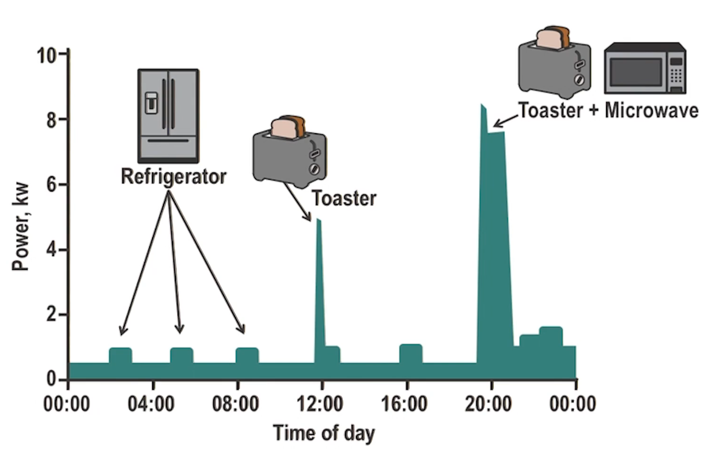

ICPSS Lecture Notes - Lesson 13 - Privacy in CPS
Privacy in CPS
- As more systems become smart they will start to capture more, very personal, data
- Smart meters, personal assistants, etc
Personal Data
- These patterns can be useful for analyzing our energy use for energy conservation but, together with data from other sources, the potential for extensive data mining is very significant
- Quote from Giovanni Buttarelli
- UK Data Protection Act Definition – can a living individual be identified from the data, or, from the data and other information in the possession of, or likely to come into the possession of, the data controller?
- Likely that there will be data that can identify a living individual originating from the metering infrastructure
- Massive amounts of personal data easily accessible by authorized and potentially unauthorized parties without safegaurds
Privacy Risks Associated With the Smart Grid
Benefits of Smart Grid
- Smart Grids provide many benefits to its stakeholders
- Consumers are given control and transparency over their energy usage
- To realize these benefits, there will be a need to utilize personal data
- Ability to log in to their energy account and view hos much energy they are using based upon information reported from their smart meter
- Allow smart devices to adjust energy consumption based upon their preferences, and the price of energy (e.g. utilize off-peak pricing)
- Receive alerts based upon grid outages via the preferred communication channel as outlined in their profile preferences
- Allow the grid operator to accurately identify the source of disruption, thus allowing for rerouting, and subsequently minimizing the time and impact of disruption
Risks of Smart Grid
- Smart meters are core devices at the center of privacy concerns related to the grid
- Key objective is to record the energy consumption of the consumer, and report this back to the operator / energy company
- One of the main consumer benefits is to report energy usage in a very granular fashion
- Does it really matter if anybody knows how much energy one is consuming?
- Yes! It allows a third-party to establish a profile of the activitied being undertaken at a property
- May be an indication that property is vacant, the number of individuals in a home, and more
- Not only are the meters capable of capturing usage by consumers, the appliances that are now “smart” also have the opportunity to capture and reveal a wealth of information
- It is possible to utilize the Nonintrusive Appliance Load Monitoring (NALM or NILM) techniques to not only reveal usage patterns about individual appliances, but also identify individual appliances using libraries of known patterns
- 
- Likely to only improve as devices improve
- This is only using energy data. Imagine if natural gas and water meter readings were also used
- It gets worse:
- For example divulging information about home appliance usage to law enforcement to review the energy consumption of properties to determine whether, for example, marijuana is being grown
- In Ohio, at least 60 subpoenas were filed by law enforcement seeking customers’ energy records from power companies
- Interesting precedent, the case in question is Kyllo v. United States
- It’s important to note that sensitive data could be made available, legally or illegally, to a variety of parties
- Law enforcement
- Criminals
- Insurance
- Advertisers/vendors
- Of course the release of individual, personal data will be covered by privacy legislation
- Therefore it is epected that without some form of explicit consent, the grid operator/energy supplier cannot release this information to authorized third parties. Note the caveat there -> Authorized third parties.
- Who defines authorized?
- Anonymization will likely be used. When we say authorized, however, we are likely to be referring to the authorization being provided by the operator, and not the consumer.
- The challenge we face with the release of very large volumes of data is the issue of inference, and advanced deanonymization attacks.
- Picture your fridge going bad, and operator notices because it’s drawing much more energy
- Operator can inform you, which is good
- Operator can also inform advertisers, who spam you with fridge ads. Which is bad.
- The field of Smart Grid analytics is predicted to grow massively
Privacy Impact Assessment
- Privacy impact assessment or data protection impact assessment (DPIA) is a recommended action thrrough a number of authoritative sources
- A process designed to analyze the privacy implications within a given system
- Necessary to:
- Possibly satisfy legal requirements
- Identify and manage risks
- Avoid unnecessary costs
- Avoid inadequate solutions
- Avoid loss of trust and reputation
- Inform the organizations communications strategy
- Meet and exceed legal requirements
- Upon the identification of any risks, a management exercise is undertaken to consider the steps taken to manage them based on the priorities
- There exist a series of options
- Risk Acceptance
- Risk Transfer
- Risk Mitigation/Reduction
- Risk Avoidance
- One of the objectives of the PIA is to demonstrate that due diligence has been undertaken regarding the processing of personal data
- Process Key Components
- Overall Risk Owner: The individual accountable for the presentation of the assessment
- Justification: Outline the reasons for the decision to undertake the risk management process
- Date: When the assessment was approved
- Date of next review: Actual date of the next review
- External Review: Any details of this document being reviewed (with comments) from third-party review
- Upon completion of the previous process, there may well be some amount of outstanding risk or residual risk
- Important to monitor and address these residual risks on a regular basis to ensure they are reasonable
- Upon completion of the impact assessment process, the Smart Grid system should be ready for deployment. The assessment should be signed and present to the Data Protection Officer (DPO)
- Privacy assessments mus be conducted regularly to keep up with the evolving threat landscape, and research activities
Providing Privacy in the Grid
- Privacy techniques proposed in literature have taken two general approaches
- Privacy Built-In (Privacy By Design)
- privacy perserved at every step in the process
- example: limit sampling rate of hardware to the minimum needed for good functioning
- Privacy Overlay
- privacy addressed all at once, at the end of whatever process
- e.g. add statistical noise to responses from meters, to mask individual home-level information while still giving operators what they need to effictively manage the grid